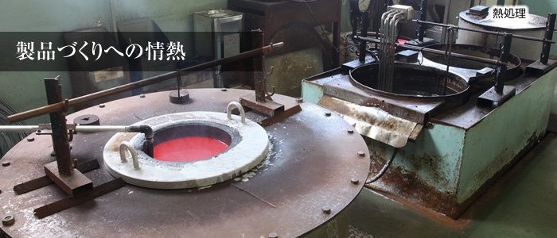
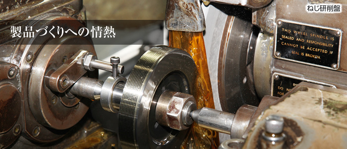
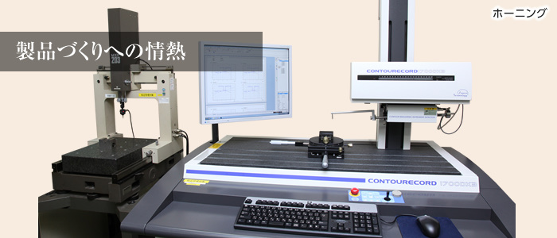
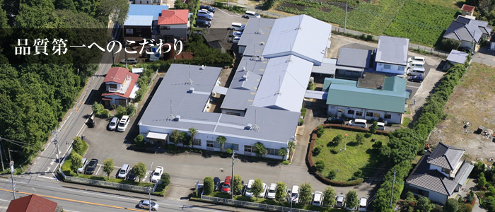

ねじ研削盤
No.47-4
φ5〜φ300 / ストローク 1,000mm
大隈マトリックス1台
栃木県さくら市創業 1935
大古精機株式会社は、1935年創業、栃木県さくら市のゲージ・治具・精密測定具の専門メーカーです。 ねじゲージ、限界ゲージ、マスターゲージの製作と、精度1ミクロンの超精密部品加工を行っています。 1967年に通商産業省より各種ねじゲージでJIS1級工場の認定を受けました。

01 — Products
ゲージ、精密部品、治具。いずれも図面からの受注製作です。
精密部品の加工径φ0.8 — φ300 mm
精密ねじ部品、精密コレット、精密ピン、精密ブッシュ、精密ガイドブッシュ、精密送りねじ、エアーマイクロジェットなど。
ねじ研削盤の対応径φ1 — φ300 mm / ストローク 1,000 mm
大隈マトリックス No.47-4（φ5〜φ300、ストローク1,000mm）ほか、マトリックス社・ワシノ機工の研削盤を保有。
内面研削の穴径φ6 — φ200 mm
岡本工作機械 IGM-15NCSP2（CNC超精密内面研削盤、φ6〜φ150）、山田工機 YIG-20-M（φ8〜φ200）。

02 — Equipment
51機種・72台。研削盤を中心に、旋盤・フライス盤・放電加工機まで自社に置いています。 以下は主要なものです。
ねじ研削盤
φ5〜φ300 / ストローク 1,000mm
大隈マトリックス1台
NCねじ研削盤
φ5〜φ150
長島精工1台
超精密外形ねじ研削盤
φ10〜φ150
長島精工1台
CNC超精密内面研削盤
φ6〜φ150 / 穴長さ 125mm
岡本工作機械1台
円筒研削盤
センター高さ150 / センター間 600mm
シギヤ精機4台
超精密成形平面研削盤
600×300mm
長島精工1台
ワイヤ放電加工機
リニアモータサーボ / 400×300×250mm
ソディック1台
CNC旋盤
最大φ356 / 最大加工長 510mm
森精機1台
ジグ研削盤
穴径 2〜100mm / テーブル 300×500mm
三井精機各1台
センターレスグラインダー
φ12〜φ34 / 長さ 40mm
ミクロン精密1台
高速自動ホーニング盤
内径φ8〜φ26 / 穴長さ 40mm
日進製作所2台
レーザーマーカ
XYZ 3軸同時スキャニング
キーエンス1台
このほか、万能研削盤8台、旋盤14台、平面研削盤4台、電気炉、低温処理槽（-10℃〜-150℃）、 サンドブラスト、バンドソーなどを保有しています。

03 — Conditions of measurement
1ミクロンを保証するには、測る場所の条件が要ります。 恒温恒湿棟は1982年に設置し、2013年に全面改修しました。

04 — History
1935年、東京大井町での創業から。設備の導入年がそのまま技術の履歴になっています。
05 — FAQ
敬称略。
06 — Contact